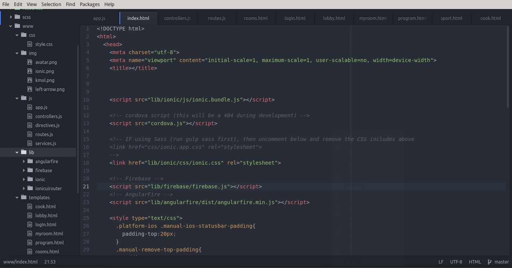
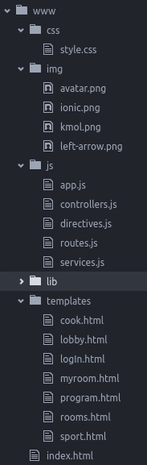

檔案架構
- index.html：首頁呼叫分支程式和頁面。
- css：存放自訂外觀。
- img：存放圖片。
- js：存放 javascript 指令。
- lib：存放外部套件，有 Angular Fire、Fire Base、Ionic、Ionic UI Router，使用 bower 安裝和更新。
- templates：存放 html 頁面檔。


ionic

gui

ionic serve

對團隊來說，額外再新增一個伺服器進行版本控制，又是一個非常麻煩的工具，因此許多人都不會想要使用git，但是再擁有版本控制著程式，對於程式碼來說非常重要，因為可以多方比較不一樣的解答和方法，再團隊開發中亦是如此。
底下式我們再github開發的流程和commit
github
Github

Github
Github

Javascript 是目前網頁語言的主流
javascript

ionic use

檔案架構
登入畫面會在登入成功或是註冊成功時顯示使用者信箱帳號名稱。
大廳在未登入時可以查看留言，但是無法發言。
一般房間在未登入時不能查看留言，無法發言。
程式部份：
原始碼

檔案樹

登入畫面
這時使用者可以透過側邊欄來切換聊天室。
大廳畫面
登入後可以在公共區域留言。
房間畫面
登入後可以在分類的區域留言。
Java Script
實體1

實體2

實體3